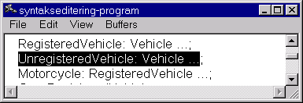
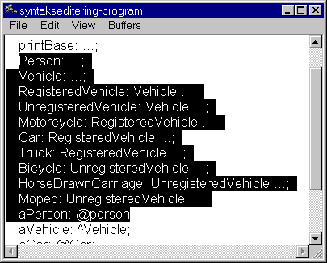
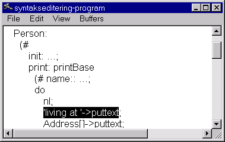

UnregisteredVehicle: Vehicle ...;

Person: ... until aPerson: @person

Person.print mark 'living at'->puttext

Person.print mark the entire do-part
![[7kb 392x433 PNG]](images/image051.png "[7kb 392x433 PNG]")
Load the file syntaxedit.bet.
In the example above, the selection becomes the entire pattern.
Another example: Mark from the middle of one pattern to the middle of the next.
The tool selects both patterns.
Try marking different chunks of code and observe what is being selected. For example, try marking the following:
UnregisteredVehicle: Vehicle ...;
Person: ... until aPerson: @person
Person.print mark 'living at'->puttext
Person.print mark the entire do-part
Experiment with the use of ctrl-o (overview) and ctrl-d (detail).
| Command | Keyboard shortcut |
| cut copy paste undo redo | ctrl-x ctrl-c ctrl-v ctrl-z ctrl-y |
Now we want to move the Person pattern down to aPerson: @person:
![[9kb 414x444 PNG]](images/image059.png "[9kb 414x444 PNG]")
![[9kb 414x444 PNG]](images/image061.png "[9kb 414x444 PNG]")
Now try undoing it all using ctrl-z.
Notice that the Person pattern could have been thousands of lines of code, and it would still be very simple to move it around or copy it.
You can apply this to all sorts of other code fragments: imperatives, descriptors, do-parts, enter-parts, exit-parts, variabels, superpattern-prefixes. But it takes a little practice to be able to use it efficiently.
| Mjolner Tool Workshop | © 2001 Mjølner Informatics |
[Modified: Tuesday May 22nd 2001 at 19:14]
|